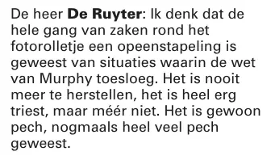

Bewijsstuk · Verhoor
Openbaar verhoor van De Ruyter, Parlementaire Enquêtecommissie Srebrenica, 6 december 2002
De passage
“Ik denk dat de hele gang van zaken rond het fotorolletje een opeenstapeling is geweest van situaties waarin de wet van Murphy toesloeg. Het is nooit meer te herstellen, het is heel erg triest, maar méér niet. Het is gewoon pech, nogmaals heel veel pech geweest.” Pagina 701, de slotverklaring van De Ruyter, in antwoord op de laatste vraag van de voorzitter of er iets was waarnaar de commissie hem niet had gevraagd. Het verslag is in smalle kolommen gezet; de regels binnen de passage zijn aaneengeschreven. Het dubbele accent in “méér” is zoals gedrukt.

Waarom dit document telt
Contra-inlichtingenmajoor De Ruyter nam het fotorolletje van Rutten in ontvangst, en hier legt hij onder ede verantwoording af over het lot ervan. Hij was majoor bij de MID/KL, het landmachtdeel van de Militaire Inlichtingendienst, en behoorde dus tot de landmacht, hetzelfde krijgsmachtdeel als Dutchbat. In zijn slotwoorden vat hij het samen als een opeenstapeling van situaties waarin de wet van Murphy toesloeg, kortom “gewoon pech”. Vier jaar eerder had generaal Couzy er al een eigen lezing van gegeven: volgens hem wilde de MID het rolletje zelf ontwikkelen. Dezelfde majoor nam in februari 1999 het verhoor van Overduyn af waaruit het ministeriële standpunt voortkwam dat Giltay “volledig gestoord” was.
Herkomst
- Document
- Stenografisch verslag van een openbaar verhoor onder ede, verhoor 40
- Getuige
- De Ruyter, Ministerie van Defensie; in juli 1995 majoor bij de sectie inlichtingen en veiligheid van de MID/KL op de Frederikkazerne, Den Haag
- Gehoord door
- Parlementaire Enquêtecommissie Srebrenica; voorzitter A.D. Bakker, vragen gesteld door F. Vergeer-Mudde
- Datum
- Vrijdag 6 december 2002, geopend 14:10 uur, gesloten 14:48 uur
- Onderwerp
- Het fotorolletje
- Plaats
- Thorbeckezaal, Tweede Kamer der Staten-Generaal, Den Haag
- Verwijzingen
- Kamerstuk 28 506, nr. 5, verhoor 40, pp. 693–701; passage op p. 701
- Taal
- Nederlands
- Vindplaats
- Verhoren 1 tot 42, Sdu Uitgevers, Den Haag, 2003
- Archiefkopie
- Wayback Machine, 27 september 2026
- Zie ook
- Intern onderzoek voor de chef-staf MID, 12 februari 1999Rapport 1999/507 van de Nationale ombudsman, 17 december 1999
Aangehaald in: het essay ‘Het verbod viel, het boek bleef overeind’ in het hoofdstuk (4) ‘Een doofpot met internationale dimensie’.
Bewijsstukpagina: https://
Document: https://
Archiefkopie: https://
Geraadpleegd 3 oktober 2026.

Deze pagina is een bewijsstuk bij het boek De doofpotgeneraal van Edwin Giltay en de bijbehorende website.